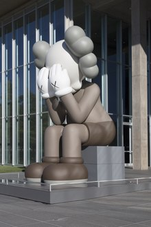

Introduction
Brian Donnelly (born November 4, 1974), known professionally as Kaws (stylized as KAWS), is an American artist and designer. His work includes repeated use of a cast of figurative characters and motifs, some dating back to the beginning of his career in the 1990s,[1] initially painted in 2D and later realized in 3D. Some of his characters are his own creations while others are reworked versions of existing icons Kaws' sculptures range in size from a few inches to ten meters tall,[1] and are made from various materials including fiberglass, aluminum, wood, bronze, and a steel pontoon inflatable raft.[2][3]
Influences for the brand come from traditional high art painters like Gerhard Richter, Claes Oldenburg, and Chuck Close,[4] and he has been compared to the likes of Andy Warhol[5][6] for his cross-market appeal and ability to blur lines between commercial and fine art. His work is exhibited in galleries and museums, held in the permanent collections of public institutions, and avidly collected by individuals[7] including music producer Swizz Beatz, internet figure PewDiePie, rappers Pharrell Williams, Kid Cudi,[8] and members of South Korean group BTS. A number of books illustrating his work have been published.
Kaws' lives and works in Brooklyn, New York, creating sculptures, acrylic paintings on canvas, and screen prints while also collaborating commercially, predominantly on limited edition toys, but also clothing, skateboard decks, and other products. KAWS is represented by Skarstedt Gallery, New York.
KAWS,"SPOKE TOO SOON" 2021 Represented by Skarstedt Gallery, New York
Early life & education
Donnelly was born in 1974 in Jersey City, New Jersey[6] where he attended St. Anthony High School. As a teenager, Donnelly created a tag for himself, KAWS (based on the way the letters looked — the word, in fact, has no meaning), which he painted on the roof of an area building so that he could see it outside while attending class in high school.[9] He went on to attend the School of Visual Arts in New York City, receiving a Bachelor of Fine Arts in illustration in 1996.[10] Following graduation, he briefly worked for Jumbo Pictures as a freelance animator painting backgrounds for the animated series 101 Dalmatians, Daria and Doug.[11]
Moving to New York City in the 1990s, illegal graffiti was the first step of Kaws learning his craft.[7][12] Animator by day, and graffiti artist by night,[13] Kaws started subvertising billboards, bus shelters, and phone booths, using a skeleton key gifted to him by friend and fellow graffiti artist Barry McGee.[7] Using a key he created for himself,[14][12] he also started subvertising bus shelters. Kaws has since subvertised in Paris, London, Berlin, and Tokyo.[15]
Artworks
Kaws' acrylic paintings and sculpture have many repeating images, all meant to be universally understood, surpassing languages and cultures.[citation needed] Some of his characters date back to the beginning of his career in the 1990s: Companion (created in 1999),[7] Accomplice, Chum, and Bendy.[1] His series The Kimpsons subverted the American cartoon The Simpsons.
Kaws' Companion is a grayscale clown-like figure based on Mickey Mouse with his face obscured by both hands, and two bones sticking out of his head. In 1999, the Japanese toy company Bounty Hunter produced and sold a vinyl Companion toy (Mickey Mouse with X-ed out eyes cloning).[12] The figure was adapted into a balloon for the 2012 Macy's Thanksgiving Day Parade,[7] as part of its "Blue Sky Gallery" of balloons. Having already created oversized sculptures in the past, Kaws started to produce further sculptures of his Companion character for exhibitions in Switzerland,[16] Hong Kong,[17] Taiwan,[18] Málaga,[19] London,[20] and China.[21]
Kaws has periodically shown both paintings and products at Colette in Paris since 1999.[citation needed] His work was included in the traveling exhibition Beautiful Losers, which started at the Cincinnati Contemporary Art Center and traveled throughout the US and Europe, including his then-largest museum show to date at the High Museum of Art in Atlanta, GA in 2012.[22]
On April 1, 2019 at Sotheby's in Hong Kong, The Kaws Album (2005), a painting by Kaws commissioned by Nigo, sold for 115.9 million Hong Kong dollars, or about $14.7 million U.S. dollars, a new auction record for the artist at the time.[23][24]
Kaws's style can be characterized by an emphasis on color and line, distinctive graphics, such as the repeated use of "x"'s on the hands, nose, eyes, ears, and the appropriation of pop culture icons such as Mickey Mouse, the Michelin Man, and his characters are generally depicted in a shy and/or powerless pose often with their hands over their nose. In his paintings, Kaws always deconstructs his appropriation of iconic characters into shapes that produces abstract paintings.[25]
Procuts & commercial collaborations
Since his first vinyl toy with the Japanese clothing brand Bounty Hunter in 1999,[26] he has collaborated on toys with other Japanese companies: Nigo for A Bathing Ape (Bape), Medicom Toy, and Santastic!. Since the beginning of their partnership in 2001, Nigo and Kaws have collaborated on the packaging for Kaws' “The Kimpsons” exhibit and three seasons of A Bathing Ape. He and Medicom Toy ran OriginalFake, a brand and store in Aoyama, from 2006 to May 2013.[27]
Kaws has also collaborated with Jun Takahashi for the brand Undercover, as a voice-over artist for Michael "Mic" Neumann's Kung Faux, and worked on projects with Burton, Vans, Supreme and DC Shoes. There are Kaws-designed small edition bottles for Dos Equis and Hennessy, rugs for Gallery 1950 and packaging for Kiehl's cosmetics.
In 2004, he collaborated with Undefeated Brand on a billboard project in Los Angeles.[28][29] In 2008, he collaborated with John Mayer to produce a collection of guitar picks.[30] In 2008, he created cover art for musicians Towa Tei, Cherie, Clipse (Clipse Till The Casket Drops) and Kanye West (808s & Heartbreak)[31] as well as designed Nike Air Force 1 trainers (the Nike 1World project involved 18 total designers).[32] And in March 2017, the Nike subsidiary Air Jordan released a capsule collection in collaboration with Kaws - four Air Jordan sneakers customized by Kaws, and a number of apparel pieces.[33]
In 2011, Kaws appeared on the Bravo reality competition series Work of Art: The Next Great Artist, where he was a guest judge for the Season 2 finale.[36] For the 2013 MTV Video Music Awards, Kaws redesigned the MTV Moonman trophy in the form of his "Companion" character,[37] and his 3D model was used to create a 60-foot tall inflatable version.[38] He also redesigned various event materials.[7]
In 2014, Kaws designed the bottle artwork for the scent Girl, by Comme des Garçons and Pharrell Williams.[39] In 2016, Kaws entered into an ongoing relationship with clothing store Uniqlo to produce a line of affordable T-shirts and accessories; the first line was clothing and soft toys based on the popular children's show Sesame Street.[40] In April 2017, Uniqlo released a line of Peanuts-themed T-shirts, accessories, and plushies designed by Kaws;[41] and in November 2018, Kaws created a second line range of Sesame Street-themed clothing and soft toys.[42]
In 2014, Kaws designed the bottle artwork for the scent Girl, by Comme des Garçons and Pharrell Williams.[39] In 2016, Kaws entered into an ongoing relationship with clothing store Uniqlo to produce a line of affordable T-shirts and accessories; the first line was clothing and soft toys based on the popular children's show Sesame Street.[40] In April 2017, Uniqlo released a line of Peanuts-themed T-shirts, accessories, and plushies designed by Kaws;[41] and in November 2018, Kaws created a second line range of Sesame Street-themed clothing and soft toys.[42]
In July 2021, Kaws collaborated with Travis Scott. In July 2022, Kaws collaborated with J-Hope, one of the members of BTS, for his solo album cover. The 2022, release of General Mills' Monster Cereals features box art by Kaws.[47]
2013 Kaws' MTV Moonman trophy